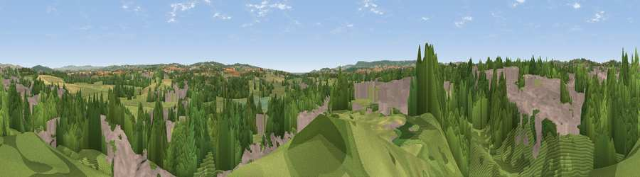

Viewpoint near Clyst St Mary
#22038 in England · top 44% of its area beats it · near Clyst St Mary · access?Where it is
The exact computed spot (SX 96575 91225). Click the marker for map links.
Public access: no public right of way or access land is recorded at this exact spot — it may be on private land. Computed from Natural England's CRoW access layer and OpenStreetMap rights of way — not the legal definitive map. Always verify locally.
The view, rendered

A 360° render of this exact spot computed from the terrain model, tree cover and land cover — summer colours, afternoon light, calibrated against photographs of famous viewpoints. Real trees, hedges and buildings will differ in detail.
The panorama
Grey silhouette: terrain skyline in each direction (720 bearings, Earth curvature and refraction included). Dashed green: skyline with trees (+15 m) and buildings (+8 m) as obstacles. Blue strip: how far the ground is visible on each bearing.
Where the view opens
Wedge length = distance to the farthest visible ground on that bearing (vegetation-aware). Rings at 10, 25 and 50 km.
What fills the view
43% woodland · 33% built-up · 19% grassland · 4% cropland ·
Angular shares of the visible panorama (visual magnitude), not map area. Landscape diversity 0.53 (0–1 Shannon).
Key numbers
More beautiful places nearby
The staircase of upgrades: each row has a higher view potential than everything closer. Driving times are estimates from straight-line distance, calibrated against real road routing — check an actual route before setting out.
| Place | Direction | Drive | Score |
|---|---|---|---|
| Viewpoint near Ebford | SE · 4 km | ~9 min | 54.7 |
| Viewpoint near West Clyst | N · 4 km | ~9 min | 57.5 |
| Viewpoint near Exminster | SW · 5 km | ~10 min | 59.5 |
| Stoke Hill | NW · 5 km | ~11 min | 67.3 |
| Viewpoint near Cowley | NW · 6 km | ~13 min | 69.8 |
| Viewpoint near Woodbury | ESE · 7 km | ~15 min | 72.2 |
| Viewpoint near Kenn | SW · 9 km | ~18 min | 80.0 |
| Viewpoint near Kenton | SSW · 11 km | ~20 min | 80.7 |
50.71143, -3.46621 · source: screening · position refined by local search. Computed location — check access rights before visiting.